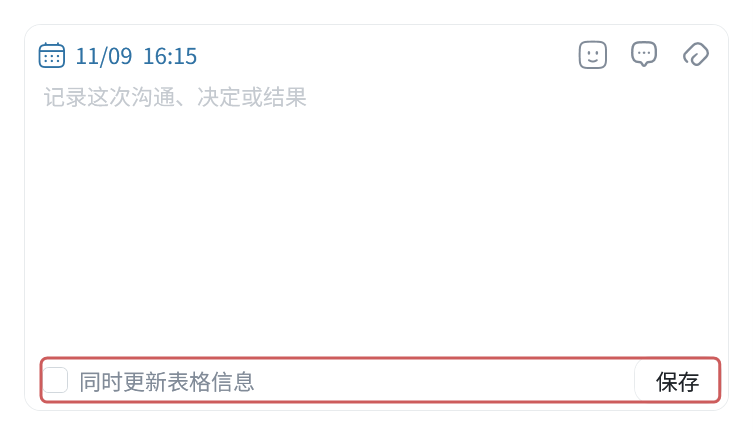
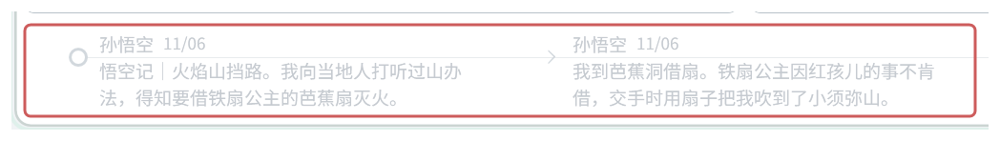

事序使用手册
事序 SHIXU 是一款 Windows 桌面工具，用于收集信息、记录日志、安排待办和跟进事项。汇报或交接时可导出文档和资料包。
从软件左下角的齿轮菜单打开“使用手册”。初次使用可从目录中的“认识与上手”开始。
更新日期：2026-11-13。适用于事序 Windows 桌面试用版。各试用版本的功能可能不同，界面与手册不一致时，可以点齿轮菜单的“支持 → 诊断”核对版本。
目录
认识与上手
收集与记录
行动与日程
事项与交付
资料与设置
完整案例
常用速查
快速上手收集卡
新建示例库带有4个分区、9张教程卡。每张讲一种常用操作或场景。
收集与桌面
01 快速收集与收集卡
按 Ctrl+Alt+Shift+S 打开快速收集，粘贴文字，或加入图片、文件。
主动输入、粘贴或拖入后自动建卡，继续写会保存到同一张。关窗或 Ctrl+Enter 结束本次；收起小窗可继续写。快捷键带入的选区按提示确认保存。
回到收集板，可用分区整理卡片。对照教程操作时，右键卡片正文选“悬浮编辑”。
02 悬浮小窗与拖入记录
右键总览中的待办、四象限或计时小组件，选“悬浮到桌面”。不用时可收成胶囊。
向待办、四象限或胶囊拖入文字、图片或文件，可直接创建待办；拖到收集卡正文可继续记录。
记录过程中，选中卡片里的一段普通文字，右键“创建待办”。原卡会留下可点击的标记，需要持续跟进时也可“转为事项...”。
记录与安排
03 随记、插图与打印
在收集板切到“随记”，写下当天做了什么。Enter 保存，Shift+Enter 换行。
照片、文件可加到详情的“材料”区。想把图片穿插在正文中，可先写图文收集卡，再“转为随记”。
到“导出”选“记录”，勾选日志后导出 PDF 或 Word，再用阅读器、Word 或 WPS 打印。
04 待办与四象限
在待办输入动作，按 Enter 创建；双击条目打开详情，补排期、负责方和优先级。
切到四象限，把待办拖到对应栏调整优先级。做完后勾选完成。
两种视图使用同一份待办。详情自动保存，排期需点“应用”。
05 日历、重复与提醒
年视图看忙闲，月视图看日期，周视图排时段。月历双击一天建全天待办，周历拖选时间段；已有待办可拖动改期。
周期任务在排期里设置“重复”，需要提示时再开“提醒”，最后点“应用”。
提醒需要事序运行；隐藏到通知区域也能提醒。修改重复待办时，先选只改本次还是本次及之后。
事项与交付
06 事项与过程记录
事项用于需要反复处理的事。在事项列表空白处右键新建，双击事项上层的列名区域展开。
“当前进展”写最新情况，“过程记录”保存每次沟通、决定和结果；可带图片、文件和后续待办。
新过程写好后点“保存”。需要同时更新当前进展时，勾“同时更新表格信息”。可先展开示例事项对照操作。

07 导出与资料包交接
在“导出”选“事项”或“记录”，勾选内容并确认。选模板，按需要加入过程、待办和材料，再核对预览。
发阅或打印选 PDF，需要继续编辑选 Word；交付原附件选“资料包（ZIP）”或资料包文件夹。
模板可保留常用版式。导出前检查附件清单，导出后打开成品核对。
查找与资料库
08 查找、归档与恢复
在随记中选文件夹和日期，再用关键词查找。找不到时，先回“全部”，检查日期和状态筛选。
处理完的收集卡可以“归档”，以后到“已归档”找回。误删内容可到左下角“回收站”还原。
清空回收站后无法还原，操作前先检查。
09 资料库备份与换机
在“设置 → 事项库”查看保存位置。保存并完全退出事序，再复制整个库文件夹。
换电脑后，等库和材料完整下载，再用“打开已有事项资料库”选择这个文件夹。记录、材料、主题、背景和布局一起保留。
同一时间只在一台电脑上修改，等同步完成再换机打开。只复制数据库或导出资料包不能代替整库备份。
配套功能图解
查看功能介绍与配图。
先认识事序
功能与入口
| 要做什么 | 用哪个功能 |
|---|---|
| 收下外部文字、图片或文件 | 快速收集，或拖入对应区域 |
| 按分区整理零散信息 | 收集板 |
| 写图文日记、工作日志 | 收集板里的随记 |
| 记录行动、安排优先级 | 待办与四象限 |
| 查看全年、整月和时段安排 | 日历 |
| 持续跟进一件复杂的事 | 事项 |
| 组合常用功能、使用桌面小窗 | 总览 |
| 生成文档、打印或打包交接 | 导出 |
记录类型
- 事项： 需要持续跟进的事，集中保存进展、经过、待办和材料。
- 待办： 具体要做的动作，可独立建立，也可归在事项下。
- 当前进展： 最新情况。过程记录： 每次沟通、决定和结果。
- 收集卡与随记： 可共用同一条记录，分别按分区、日期查看；改一处正文，另一处也会变化。
- 导出稿： 准备输出的文档，修改排版和补充内容不影响原记录。
模块关系
快速收集和拖入可生成记录或待办。记录时选中卡片文字，可创建待办，或新建／关联事项。
事项中的进展、过程、待办和材料可一起导出。待办列表、四象限、日历和总览显示的是同一条待办，改动会同步。
首次使用
安装并打开资料库
- 安装后打开“事序 SHIXU”，新建资料库或打开已有库；已有库要选整个文件夹。
- 新库默认放在 Windows“文档”目录，可修改库名和位置。
- 在总览点“快速上手”，查看“示例：快速上手 → 入门练习”中的4个分区、9张教程卡。
示例可编辑或删除；旧库里的教程卡不会随软件更新自动替换。切库前先保存，再点左上角事序标志选择新建或打开。
模板编辑和 PDF 预览需要 WebView2，缺少时按安装提示补装。安装包提示未知发布者时，先核对来源和版本。
保存方式
| 位置 | 怎样保存 |
|---|---|
| 快速收集 | 主动输入、粘贴或拖入后自动保存；外部选区按提示确认 |
| 收集卡 | 结束编辑保存；Ctrl+Enter 保存并新建下一张 |
| 随记快速输入 | Enter 或“保存”；Shift+Enter 换行 |
| 待办详情 | 自动保存；排期要点“应用” |
| 事项表字段 | 改好后点击其它区域提交 |
| 过程记录 | “保存”或默认 Ctrl+Enter |
| 导出草稿 | 自动保存；手改成品后点“结束编辑” |
| 模板 | 点“保存” |
| 设置 | 点“应用”或“确定” |
关闭主窗口默认隐藏到通知区域。完全退出时，右键通知区域图标选“退出程序”。
文件夹与查找
用文件夹组织内容
按项目或主题建立文件夹。范围区可新建文件夹，右键已有文件夹可新建子级、重命名、移动或删除。
内容放在哪里由“所属位置”决定，移动后原创建来源仍保留。删除文件夹前，先看提示中的影响范围。
区分范围、日期和筛选
文件夹、日期、状态和负责方会共同限制显示结果。支持的模块可选择“包含子文件夹”；导出列表在空白处右键设置。
| 小日历所在模块 | 作用 |
|---|---|
| 待办、四象限 | 按排期筛选 |
| 随记 | 按记录日期筛选 |
| 日历 | 跳到指定日期 |
| 事项、导出 | 浏览日期，不筛选内容 |
可选一天、整周、整月或起止范围。再点亮起的范围按钮可清除条件；翻月只浏览。
搜索和定位
搜索默认查当前范围。跨文件夹查找时点“在全部范围搜索”，点击结果回到原内容。
搜索仍受当前模块、来源和其它筛选限制，不搜索所有附件正文。找不到内容时，先清除日期和状态条件。
快速收集
用途和入口
打开资料库后，按 Ctrl+Alt+Shift+S 或从通知区域菜单打开“快速收集”，收下其它软件里的文字、图片和文件。
保存一张卡片
- 粘贴、拖入内容，或用附件按钮选择文件。
- 选保存位置，按需填来源和优先级。
- 主动输入后自动建卡，继续写保存到同一张。关窗或 Ctrl+Enter 结束本次；收起小窗可继续写。
快捷键带入的外部选区仍需按提示确认保存。微信已选消息由你触发复制，软件不持续监听聊天。
位置失效、保存失败或版本冲突的处理，见保存失败或卡片冲突怎么办。
收集板
新建和编辑卡片
- 选文件夹，在分区内点“＋”建卡；需要分类时新建分区。
- 单击正文编辑，右键可插入图片、文件或打开“完整编辑”。也可粘贴、拖入内容。
- 结束编辑保存；Ctrl+Enter 保存后新建下一张。
Enter 分段，Shift+Enter 段内换行。删除分区时，卡片移到当前范围的默认分区。
在小窗编辑卡片
右键正文选“悬浮编辑”，可边看其它页面边记录。小窗、卡面和完整编辑共用同一张卡。
删除正文中的附件或引用后，即使已经自动保存，仍可在当前编辑中撤销恢复。
整理和显示
- 拖动卡片调整顺序或换分区。
- “卡片显示”切换完整内容和摘要；右键卡片可换底色。
- Ctrl+滚轮调整卡列，Ctrl+Shift+滚轮调整卡面字号。
底色只改外观，优先级另行设置。
从卡片创建待办或事项
选中同一段中的普通文字并右键：
- 创建待办： 把这句话接成一条行动。
- 转为事项...： 新建事项，或给已有事项追加一条过程。
原卡会留下可点击的标记。新建事项会带上初始内容和首条过程；图片、附件需另行加入。已有链接和关联标记不能再次转换。
归档、转为随记和删除
| 操作 | 结果 |
|---|---|
| 归档 | 收起卡片，可到“已归档”找回 |
| 转为随记 | 卡片归档，同一正文和材料可按日期回看 |
| 取消归档 | 卡片回到收集板，已有随记保留 |
| 删除卡片 | 记录进回收站，共用这条记录的随记也会被删除 |
清空卡片不等于结束编辑。清空后关窗的处理见清空卡片后会怎样。
整理后归档与找回
在“已归档”按文件夹查找，右键“取消归档”放回收集板。已转为随记的记录，也可在随记按日期找。
随记与图文日志
用途和入口
在收集板切到“随记”，按日期写日记、工作日志或备忘，不必另起标题。待办详情里也可写随记，并保留返回原待办的入口。
写一条日志
- 选文件夹和日期，填写正文。
- Enter 或“保存”提交，Shift+Enter 换行。
- 双击记录打开详情，修改正文、日期和所属位置。
拖动输入区底边可调整高度。正文工具栏支持加粗、列表和链接；列表项开头按退格可改回普通段落。
随记可记今天或过去的事，未来安排请用待办。
高级排版源文
工具栏可打开 Markdown 源文。含待办、事项或附件关联时，源文只读，请回普通编辑模式修改。
添加图片和文件
- 材料附件： 在详情“材料”区选择文件、粘贴图片或拖入文件。
- 正文插图： 先写图文收集卡，再转为随记。已有随记可“放入收集板”，打开同一张卡片插图。
- 只加到导出文件： 用“编辑成品 → 插入图片”。
查看历史和转换位置
在“修改历史”选旧版查看，按需“恢复为当前正文”。恢复会新增版本，日期、位置和材料保留。
“放入收集板”和“打开收集卡”使用同一条记录。“取消转化并恢复收集卡”会恢复原卡，移除这次转换新增的随记，保留转换前已有的随记。
“创建来源”可返回仍存在的原内容，不能在这里手动新增关联。
导出和打印日志
单条记录在详情“更多操作”中选“导出整条记录”；多条到导出页选“记录”。文件和打印方法见导出与打印。
待办
创建一条行动
在输入框写动作标题，按 Enter 创建。双击条目打开详情，改正文、负责方、优先级或所属位置；排期改好后点“应用”。
独立待办可放收集箱或文件夹；属于某件事项的行动，在该事项下创建。一条待办只有一个所属位置，创建来源另行保留。
负责方记录人员或单位，不会自动通知对方。列表顺序和默认日期见待办怎样排序和预填日期。
排期、提醒和重复
在排期面板选日期、时刻或时间段，按需开启提醒、重复，最后点“应用”。
重复支持日、周、月、年和完成后，可设间隔、结束条件；月、年规则可用公历或农历。“每两周一次”选每周，间隔填2。
普通待办可清除排期，重复待办必须有排期。修改重复任务时，先选“仅修改这次”或“这次及之后”。
事序运行时才会提醒，隐藏到通知区域也能提醒。只设日期不会自动开启提醒。
完成、放弃、重开和删除
做完勾选完成，不再处理可右键“放弃”，两者都能“重开”。删除会移入回收站。
正文检查清单全部勾完后，仍需手动完成这条待办。批量选取、改期见常用快捷操作。
纪念日
普通待办设好日期后，右键“转为纪念日”，也可转回待办。纪念日可重复、提醒，在日历和总览显示，不进入四象限，也不用勾选完成。
未排期、已完成／放弃或完成后重复的待办，按提示调整后再转换。
四象限
四栏表示什么
在待办页切换“四象限”，查看同一份待办：
| 象限 | 优先级 |
|---|---|
| 重要且紧急 | 高 |
| 重要不紧急 | 中 |
| 紧急不重要 | 低 |
| 无优先级 | 无 |
“无优先级”不代表软件判断它不重要。优先级由你设置，不随到期时间变化。
调整优先级
拖到另一栏改优先级，同栏拖动改顺序。可直接排期、勾选完成，或双击打开详情。
四象限和列表可分别筛选日期；四象限不显示已完成、已放弃的待办和纪念日。
日历
年月周分别看什么
| 模式 | 用途 |
|---|---|
| 年 | 看全年忙闲和排期分布，不逐条显示所有标题 |
| 月 | 看每天的安排和跨日待办 |
| 周 | 看全天安排，按小时安排时段 |
| 周内缩放 | 集中看3～7天，仍是同一份周日历 |
顶部切换年、月、周，“今天”回到当天。日期区 Ctrl+滚轮切换视图或天数，小时区缩放调整时间刻度。
创建和安排
- 月历双击日期，创建全天待办；周历拖选时间段，创建时段待办。
- 拖动已有待办改期，拖动边缘改时长；重复待办先选择修改范围。
- 空白处右键打开“待安排”，可把未排期待办拖进日历，也可新建或显示已完成项。
普通待办拖回“待安排”会清除排期，提醒按提示处理；重复待办须先取消重复。直接关闭未编辑的空草稿不会建待办。
事项与过程脉络
什么时候建立事项
一件事需要反复、长期跟进时，用事项集中保存当前进展、过程、待办和材料。
新建、编辑和展开
- 在事项列表空白处右键“新建事项至...”，选文件夹。
- 双击可编辑字段填写内容，点其它区域保存。
- 双击事项上层的列名区域展开，处理待办、过程和材料；可同时展开多件事。
单击上层区域只选中，不展开。
集中跟进多件事
把事项按项目放进文件夹，用状态、搜索和当前进展查看处理情况。
右键“列与视图...”选择显示的列，调整顺序、宽度、换行和冻结，再点“应用”。已有字段在“未显示”中找；缺少时点“＋”新建共享文本字段。
各文件夹可保存自己的列布局。只想少看一列就隐藏；归档共享字段会影响所有使用它的文件夹。新建字段后即使取消布局，下次仍能在“未显示”中找回。
更新状态和当前进展
状态可选“处理中”“待回应”“暂缓”“已解决”。当前进展只写最新情况，完整往来留在过程记录中。
追加过程
- 在展开的事项里写本次沟通、决定或结果，按需补发生时间、相关方、来源和材料。
- 要同时更新当前进展，勾“同时更新表格信息”；不勾就保留原进展。
- 点“保存”或默认 Ctrl+Enter。这里的 Enter 是换行。
正文或材料至少填一项才能保存；同步当前进展还需要正文。
回看和修订经过
点击底部过程节点查看，右键可修改经过、创建后续待办或删除记录。新进展另加一条过程，纠错才修改原记录。
鼠标放在表头滚动，或按 Shift 滚动，可横移事项表；底部时间线可单独横向滚动。切换过程前先保存正在写的草稿。

事项交接
选中事项，右键“导出所选事项”，或到导出页跨文件夹选择。报告可含进展、过程和待办；原文件随资料包交付，见导出与打印。
总览工作台
按自己的习惯组合
总览可组合待办、四象限、日历、关注事项、纪念日、计时和常用工具。
点“编辑 → 添加组件”，选择功能和可用尺寸，调整位置后点“完成”。不保留改动时取消。
待办组件可添加多个，分别选文件夹和日期。其它组件能否重复添加，以组件库为准。
放在桌面使用
右键待办、四象限或计时小组件，选“悬浮到桌面”。
- 小窗可移动、置顶，不用时收成胶囊；主窗口最小化不影响它们。
- 向待办、四象限小窗或胶囊拖入内容，可直接创建待办。
- 待办小窗可选文件夹、日期范围，点日期或负责方直接修改；双击条目打开主列表详情。
- 计时与总览同步，收成胶囊也能启停。
多开、拖入去向和吸附方法见常见问题。
几种常用配置
- 关注事项： 在事项列表右键勾“在总览显示”；取消勾选即移除，解决事项不会自动移除。
- 计时： 正计时、倒计时、暂停、继续和重置；不保存每次计时的历史。
- 天气、行情、资讯： 联网更新，失败或缓存过期时会提示。
- 日期、纪念日： 看近期日期，公共节假日不会自动变成个人待办或提醒。
扩展快捷工具
快捷工具可添加 Quicker 入口，目标动作需先能在本机 Quicker 中运行。
导出与打印
选择来源
- 导出页选“事项”或“记录”。事项可带进展、过程和待办；记录指收集卡、随记。
- 跨文件夹勾选内容，在右侧已选清单核对，再点“确认事项／确认记录”。
一份草稿只用一种来源。单条记录可在详情中选“导出整条记录”。
组织内容
选模板、填文件标题，勾选要输出的字段、过程、待办和材料，再看纸面预览。普通整理可先用“常规信息表”。
事项稿可按事项或按日期排列；按日期需开启过程记录，模板也要有过程重复行。记录稿没有这项排列。
草稿自动保存，可从“已导出／草稿”继续。过程记录不包含同文件夹里的独立随记和卡片，它们需另选“记录”导出。
区分正文图片和附件
| 内容或选项 | 作用 |
|---|---|
| 正文已有图片 | 随正文输出，保留图文顺序 |
| 附件来源、纳入附件 | 决定带哪些原文件 |
| 附件清单 | 核对、排除文件 |
| 显示附件图片 | 决定是否把附件图片放在纸面上 |
| 名称分行／连续 | 调整附件名称排版 |
| 资料包 | 文档连同所选原附件一起交付 |
关掉附图不会排除原文件，正文插图也仍会输出。非图片文件在文档中显示编号和名称，原件随资料包交付；库内原文件名不变。
编辑成品与插图
点“编辑成品”改纸面内容或插图，完成后点“结束编辑”。只影响这份稿，不改原记录或模板。
手改后部分生成设置会锁定。要重选内容或版式，点“重新生成”，原手改稿会留作备份。来源有更新时，点“更新内容”带入新内容。
成品里的插图只用于文档。要打包其它文件，先把它加入来源条目的材料区，再在附件清单中选入。
输出文件或资料包
在“导出为”选 PDF、Word、资料包文件夹或 ZIP。资料包的信息表也可选 PDF 或 Word。
导出后打开成品核对。取消或失败会保留草稿；移走成品后，导出历史无法打开原路径。
打印
用 PDF 阅读器、Word 或 WPS 打印导出的文件，分页以打印预览为准。
导出模板
套用现有模板
在导出草稿中选模板，补本次内容并核对预览。常用报告、联系单和过程表可保存为模板反复使用。
制作自己的模板
- 导出页切到“模板”，新建或复制一份。
- 编辑固定文字、表格和布局。选单元格，点右侧字段按钮放入内容。
- 多件事项、多条过程设置“重复行”；需要时加“导出补填”和“跨页重复表头”。
- 保存后回到导出草稿选用。
事项模板用事项、过程字段，记录模板用记录字段。修改内置模板会另存一份，不覆盖内置原版。
字段与补填怎么理解
- 来源字段： 已保存的事项、过程或记录内容。
- 导出补填： 只为这份稿另外填的信息，不改原事项；同一字段放多处只填一次。
- 自动信息与附件： 模板提供的自动信息、附件清单等。
- 记录正文首行： 正文第一行；记录创建时间： 建立记录的时间，不一定是事件发生时间。
补填名称无效或重名时按提示改，Esc 可取消。
模板更新与旧草稿
旧草稿保留原模板版本，点“应用最新版本”才更新。更换模板可能影响补填，先读提示。
删除模板不删除已有草稿和文件。
材料历史与回收站
加入和打开材料
在条目的“材料”区选择文件、拖入文件或粘贴图片。软件把副本放进资料库，之后源文件变化不影响已加入的版本。
图片可预览，材料菜单可“在文件夹中显示”。要修改材料，先另存副本，改好后再加入，保留当时的原件。
从事情中查找材料
事项材料在展开区；某次经过的附件在对应过程里；待办和随记的材料在各自详情中。
材料缺失或变化
异常材料菜单选“找回原件...”，从候选或电脑中选择原件。只有内容一致才能恢复，同名文件不能直接顶替。
整库检查在“设置 → 事项库 → 材料检查”。它会列出缺失、变化和未登记文件，不自动清理。
修改历史
从内容的历史入口查看旧版本，随记恢复见查看历史和转换位置。恢复整库要用资料库备份。
回收站
在左下角、齿轮上方打开“回收站”，找到条目点“还原”。刚删的事项也可在事项表空白处右键恢复。
右键回收站可清空。先检查范围和备份，清空后记录及其专属材料无法还原。
外观与其它设置
打开“设置”，改好后点“应用”或“确定”。“取消”放弃未应用的改动；标明即时生效的操作不会撤销。
| 设置页 | 主要内容 |
|---|---|
| 通用 | 首页、关窗行为、开机启动、应用锁、操作确认 |
| 外观与视图 | 明暗、主题色、卡片底色、背景、图标和头像 |
| 提醒 | 开关、声音、免打扰和测试提醒 |
| 快捷键 | 查看、修改可配置的按键 |
| 事项库 | 库的位置、切换、材料检查 |
| AI 连接 | 连接方式、读取和写入权限 |
主题与卡片颜色
在“外观与视图”选明暗模式和主题色。色格“＋”添加自定义颜色，左键选用，右键更换。
单张卡片在右键菜单设底色，全局开关是“显示卡片底色”。业务状态色和导出配色单独管理。
背景图片
在“背景图片”选内置“远山背景”，或点空格“＋”添加静态 PNG、JPG。左键选用，右键更换；“不使用背景”切回纯色并保留已加图片。
图片限20 MB，横图建议16∶9、1920×1080或更大。软件保留缩小、去除原始元数据后的副本，移动原图不影响使用。
| 调节项 | 影响什么 |
|---|---|
| 背景透明度 | 整体底图 |
| 主面板透明度 | 主面板、日历日期底板 |
| 正文区透明度 | 事项条、卡片、详情和日历热力底色 |
数值越大，图片越淡，100%只显示原底色。文字、图标和日期选中标记保留；调节可实时预览，点“应用”保存。
远山背景可选原图、跟随主题或自选颜色，其它导入图片不提供改色。背景图片用于主窗口，悬浮窗背景另行设置，见悬浮窗背景在哪里调整。
图标与头像
在“外观与视图 → 图标”选预设或添加头像。预设随主题换色，头像保留原色；任务栏和通知区域图标单独选择。
点“应用”保存，取消则恢复上次选择。
提醒和快捷键
提醒页可设声音、免打扰和每日时段，用“测试提醒”检查效果。快捷键改好后点应用；组合被其它软件占用时换一个。
新配置默认随 Windows 启动，登录后只运行后台提醒。可在“通用”关闭，已有选择会保留；登记失败时点“修复登记”。
收藏和设置导入导出
常用选项可收藏，“已自定义”显示改过的设置。窗口底部可导入、导出已应用的设置，不能代替资料库备份。
主题、背景、透明度、模块布局和总览排列随库保存。切库会切换这些设置；新库沿用当前已应用外观，布局从默认值开始。
应用锁只锁界面，不加密资料库文件。
资料库备份与更新
资料库是完整的本地文件夹，包含记录、材料及库内配色和布局。备份、同步或换机时，整个文件夹一起带走。
查看和切换资料库
在“设置 → 事项库”查看保存位置。切库方法见首次使用；打开失败时保留原库，不混用不同库的文件。
完整复制一份备份
- 保存内容，从通知区域菜单完全退出事序。
- 复制整个库文件夹，检查副本是否完整，并保留原库。
- 恢复时先复制到独立位置，再用“打开已有事项资料库”打开核对。
单个数据库、导出资料包和设置文件都不能代替整库备份。
通过同步工具换电脑使用
电脑 A 退出后上传整个库；电脑 B 完整下载后再打开。换回时先退出 B，等同步完成再开 A。
同一时间只在一台电脑修改。出现冲突副本时先停止写入，保留各份文件。
压缩和迁移资料库
完全退出后，可把整个库复制到移动存储或压成 ZIP。换机先复制、解压到本机，再用兼容版本打开。
配色、背景和布局随库保留。窗口位置、开机启动、提醒、快捷键、快捷工具路径和 AI 连接属于本机设置，换机后需核对。
更新与卸载
齿轮菜单打开“检查更新”。安装版可在电脑空闲、网络不按流量计费时检查并下载，校验完成后由你点“更新并重启”。可关闭自动下载，保留手动检查。
更新后首次打开会显示简短说明，左栏可回看最近5版。首次安装可选桌面快捷方式，升级会保留你删除图标的选择。
新版启动检查失败会恢复旧程序，但升级后的库未必能用旧版打开。更新前备份，之后用兼容版本继续写入。未开放在线更新的试用版按原方式安装新包。
卸载会保留库和设置；卸载前先确认位置并备份，不要同时删除资料库文件夹。
与 AI 一起使用
把手册交给 AI
可把手册交给 AI，说明软件版本、当前模块、目标和遇到的提示，让它按手册给出步骤。分享文字或截图前，先移除不准备公开的信息。
连接 AI 读取当前库
- 打开目标库，在“设置 → AI 连接”开启读取并应用。
- 按接入信息，在支持 MCP 的 AI 客户端添加连接。
- 在聊天中说明要查看的范围和内容。
连接地址在本机，在线聊天服务未必能直接访问。连接凭据相当于访问钥匙，不要公开或放进反馈。
允许 AI 创建和修改
开启“允许 AI 创建和修改”后，在聊天中明确要改什么，完成后回软件核对；事序不会逐次弹窗确认。
支持收集卡、事项、过程和待办的读取、创建与修改。附件只提供名称等基本信息，不支持删除、还原、导入文件或后台托管任务。
每个库分别记住连接及写入权限，新库默认关闭；切库、退出会停止旧连接。手工编辑中的内容可能拒绝 AI 同时修改，先保存并结束编辑，再让它重新读取。
完整使用案例
案例一 写图文工作日志并打印
- 在随记写当天工作，照片放材料区；正文插图通过同一张收集卡编辑。
- 到导出页选“记录”，勾选这几天的日志。
- 选模板、核对图片和预览，导出 PDF 或 Word 后打印。
案例二 从一条信息持续跟进到交接
- 把待确认的信息收成卡片，选中文字“转为事项...”。原附件另加到事项或过程。
- 在事项里建后续待办，到日历安排时间。
- 每次反馈追加过程和材料，按需更新当前进展。做完待办后再判断整件事是否解决。
- 交接时选事项、套模板，输出文档；需要原文件就输出资料包。
案例三 搭建每日工作台
在总览添加常用组件，调整位置后保存。重点事项勾“在总览显示”，待办组件分别选项目和日期。
需要边工作边用时，把待办、四象限或计时悬浮到桌面；外部内容可直接拖入记录。快捷工具的目标动作需先能在本机运行。
案例四 同时跟进多件事并形成阶段报告
按项目建立文件夹，用事项表的状态和当前进展看总体情况，展开具体事项记录过程和材料。
汇报时跨文件夹勾选事项，选字段、过程和附件，套用阶段报告模板。按日期复盘时开启过程记录，并使用过程重复行。
常用快捷操作
下表列出默认操作。可配置的按键见“设置 → 快捷键”。
| 场景 | 操作 | 结果 |
|---|---|---|
| 已打开事序和资料库 | Ctrl+Alt+Shift+S | 快速收集 |
| 快速收集小窗 | Ctrl+Enter | 保存当前收集 |
| 收集卡编辑 | Ctrl+Enter | 保存并新建下一张 |
| 收集卡编辑 | Enter／Shift+Enter | 分段／段内换行 |
| 收集板 | Ctrl+滚轮 | 调整卡列显示 |
| 收集板 | Ctrl+Shift+滚轮 | 调整卡面字号 |
| 随记快速输入 | Enter／Shift+Enter | 保存／换行 |
| 待办列表 | Enter | 打开所选待办详情 |
| 待办列表 | Ctrl 或 Shift 配合单击 | 追加选择／连续选择 |
| 事项过程录入 | Ctrl+Enter | 提交过程 |
| 事项单元格编辑 | Alt+Enter | 单元格内换行 |
| 事项表 | Ctrl+F／Ctrl+H | 查找／替换 |
| 日历正文 | Ctrl+滚轮 | 日期尺度缩放 |
| 通用 | Esc | 关闭当前浮层或取消当前操作 |
| 主窗口 | Ctrl+Alt+L | 锁定事序，按应用锁设置执行 |
事项表的撤销／重做仅适用于支持的表格操作。
常见问题
找不到内容怎么办
先回“全部”，检查文件夹、日期和状态条件，再搜关键词。需要跨文件夹时点“在全部范围搜索”。
为什么卡片和随记一起变化
它们可能显示同一条记录。编辑正文会同步，删除这条记录也会同时影响两边。
为什么 Enter 有时保存有时换行
随记快速输入中 Enter 保存；卡片、正文和过程输入中 Enter 换行。其它提交方式见保存方式和快捷键设置。
完成待办后为什么事项还没解决
待办只代表一次行动。事项是否解决由你判断，并单独修改状态。
四象限和列表数量不一样
先对齐日期和其它筛选。四象限不显示已完成、已放弃项和纪念日。
为什么年视图看不到全部标题
年视图看忙闲分布，具体内容用月或周视图查看。
日志正文没有插图菜单怎么办
把记录放入收集板，在同一张卡片里插图；附件加在“材料”区。见随记与图文日志。
更新事项后为什么旧报告没变
草稿保留原内容，点“更新内容”才重新取入。手改成品后先看备份提示。
为什么模板不能按日期排列
事项稿要开启过程记录，模板要有过程重复行。记录稿不提供这项排列。
关闭附图后为什么附件还在包里
附图开关只管纸面。要排除原文件，在附件清单里取消选择；正文插图也不受附图开关控制。
材料文件找不到或内容变化了
单个文件用“找回原件...”，整库用“材料检查”。只有内容一致的原件才能恢复。
关闭窗口后为什么还在运行
关窗可能设为隐藏。完全退出请用通知区域菜单；默认行为可在“设置 → 通用”调整。
为什么没有提醒
检查待办提醒、程序是否运行、免打扰和声音设置，再用“测试提醒”检查。只设日期不会自动提醒。
AI 说保存了为什么没看到
核对连接、写入权限、资料库和筛选。结束手工编辑后，再让 AI 重新读取。
待办怎样排序和预填日期
- 主待办不选日期时按手动顺序平铺，新建在前；选日期范围后按排期排列，同排期可拖动排序。“今天”也显示逾期未完成项。
- 悬浮列表“全部”和“今天”下新建在前，多日范围按排期显示。鼠标移到待办左侧可拖动，顺序按小窗及筛选范围记住。
- 创建条会按所选日期预填：单日取当天；多日含今天取今天，未来范围取首日，已过去的范围不填。可手改或清空，清空后不自动补回。
新建后没显示时切到“全部”查看，日历仍保留待办的原排期。
怎样多开和筛选待办小窗
同一待办组件可反复右键开小窗，最多10个。每个新窗复制当时的文件夹和日期，之后各自独立；四象限和计时各一份。退出后不自动恢复这些小窗。
待办小窗左上选文件夹，包含子文件夹；底栏右侧选日期，右键可更换日期范围。选“全部”可见未排期项，完成记录在“已完成/放弃”中。
拖入小窗或胶囊后存到哪里
| 拖入位置 | 结果 |
|---|---|
| 展开的待办小窗 | 按创建条的归属、排期建待办 |
| 展开的四象限 | 按落点设置待办优先级 |
| 待办胶囊 | 按显示的文件夹和日期范围创建，优先级为无 |
| 四象限胶囊 | 在收集箱建待办，不设排期和优先级 |
| 快速收集正文 | 建立收集卡，或续写同一张 |
| 收集卡正文 | 加到当前记录 |
默认日期跨天会更新，手工修改过的日期保留。四象限里的拖动和从外部拖入是两种操作，前者调整已有待办。
胶囊怎样吸附和移动
拖到另一胶囊的右侧或下方附近可吸附。拖最前面的移动整组，拖中间的拆出它和后半组。
展开尽量避开已有面板，收起回原位置；展开后直接拖面板会脱组。展开面板靠边松手可贴齐，但不联动移动。分组只在本次运行保留，不会自动置顶。
悬浮窗背景在哪里调整
在“设置 → 外观与视图 → 悬浮窗背景”，或右键悬浮窗标题区进入设置。调背景透明度不影响文字和按钮。
Windows 11 在系统“个性化 → 颜色”开启“透明效果”可显示毛玻璃；关闭、Win10或高对比度模式使用普通透明。透明度为0时是实底，原数值会保留。
清空卡片后会怎样
卡面清空后可继续输入，直接离开会恢复上次保存内容。
悬浮卡或快速收集小窗中，正文和全部材料都清空后主动关窗，会移除卡片。新建且无关联的卡丢弃；已有或已关联的卡进回收站。
保存失败或卡片冲突怎么办
- 保存失败： 保留窗口和草稿，按提示重试；不要直接清理资料库文件。
- 原文件夹不可用： 重选位置，已输入内容保留，不会自动改存到收集箱。
- 版本冲突： 点“处理冲突”。“保留为新卡”留下本地副本，再显示原卡最新内容；“放弃本次修改，读取最新内容”会丢弃本地未保存改动。
副本保留可用附件；失效的关联标记仍保留，但不会恢复已删对象。撤销完全部本地改动后，可直接关闭悬浮卡。
拖入保存失败时，退出或切库前可选重试、放弃并离开、暂不离开。导出草稿有并发改动时会另存副本，保存失败先重试再离开。
怎样反馈问题
齿轮菜单“支持 → 反馈”查看邮箱和 QQ 群，“支持 → 诊断”查看版本、导出诊断包。
反馈附时间、操作步骤、现象和错误提示；发送前检查截图和附件。需要复现日志时，先开“详细日志”，复现后导出，再关闭。
“支持 → 赞助”可查看 GitHub 和自愿赞助方式，事序完全免费。
术语速查
| 名称 | 含义 |
|---|---|
| 资料库／事项资料库 | 保存记录、事项、待办和材料的完整本地文件夹 |
| 文件夹 | 库内组织内容的目录，可有子文件夹 |
| 收集板 | 按分区摆放和整理卡片的工作区 |
| 收集卡 | 保存零散图文和材料的一条记录 |
| 随记 | 按日期保存和回看的日记、日志或备忘 |
| 事项 | 需要持续跟进的事，包含现状、经过、行动和材料 |
| 当前进展 | 事项最新情况的简要说明 |
| 过程记录 | 一次沟通、决定、处理或结果的记录 |
| 过程概览 | 回看事项发展脉络的位置 |
| 待办 | 具体要做的动作 |
| 优先级 | 行动的轻重缓急 |
| 四象限 | 按优先级查看和调整待办的视图 |
| 排期 | 安排在哪天或哪个时段 |
| 提醒 | 到指定时间提示你 |
| 重复 | 按规则安排下一次行动 |
| 纪念日 | 可设置日期、重复和提醒，无普通完成状态 |
| 负责方 | 待办指定的一个人员或单位 |
| 相关方 | 某次过程涉及的人员或单位，可有多个 |
| 创建来源 | 创建记录时关联的原始来源，单独于所属位置保存 |
| 材料 | 加入库里的图片或文件 |
| 草稿 | 可继续整理的导出文档 |
| 成品 | 排版后的输出内容 |
| 模板 | 文档的固定版式和字段位置 |
| 导出补填 | 只为这份稿件另外填写的信息 |
| 资料包 | 信息表和所选附件组成的文件夹或 ZIP |
| 归档 | 收起卡片，可再找回 |
| 删除 | 将内容移入回收站 |
| 全部范围 | 当前模块或来源中的全部适用范围 |